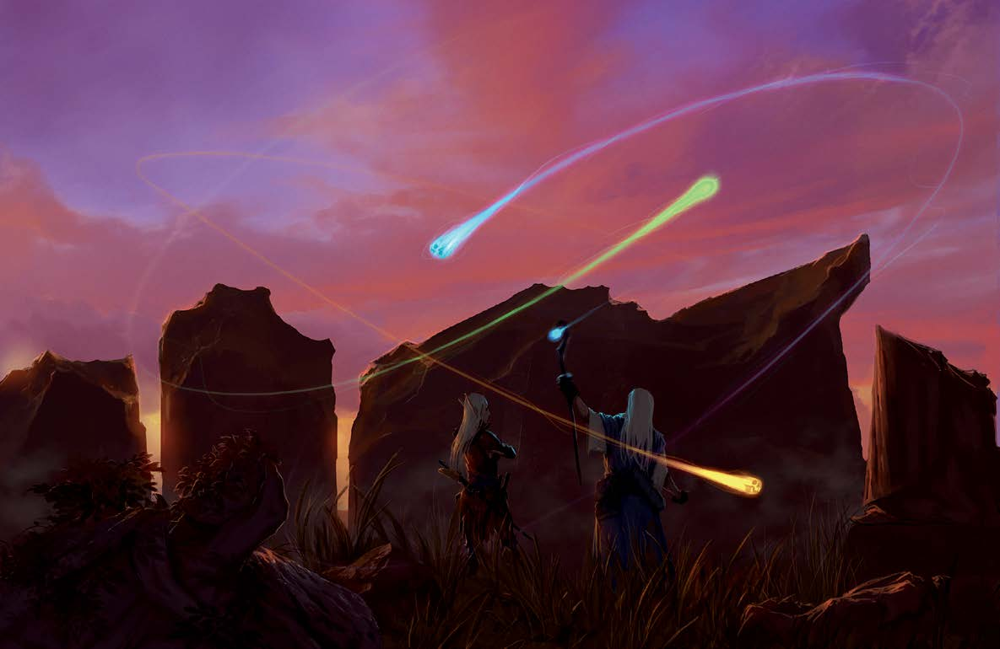
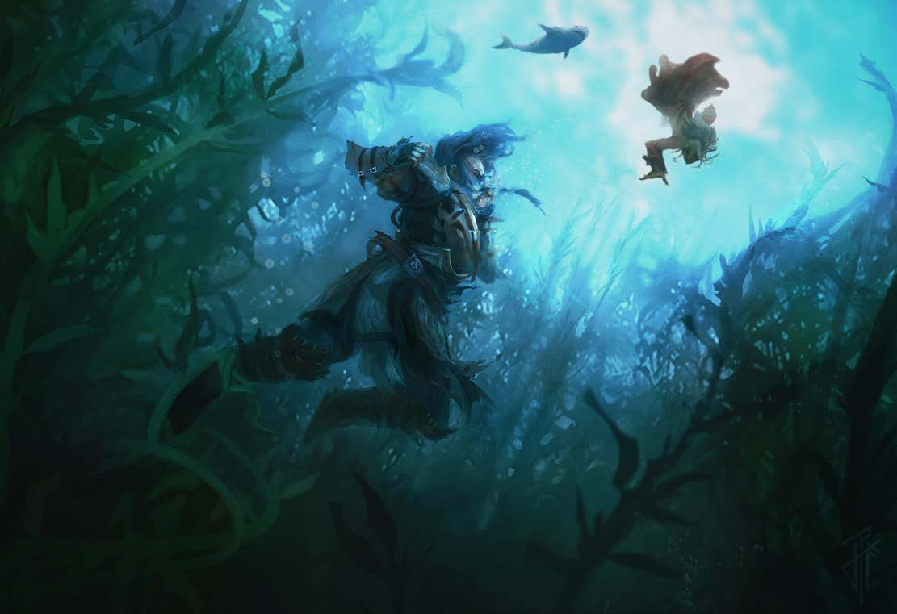

Step 2: Choose a Class
Get an idea of the kind of character you want to play. Magic or Melee? Tactical or Straight Forward? Highly Skilled or Powerful? Team Oriented or Loner? Choosing a class is the first step in building your character.
Restrictions - There are no restrictions (except that everything must be first-party) on classes, though the Players Guide has some advice. Classes that rely on a certain degree of stable infrastructure, especially urban-focused classes and archetypes, will have a harder time. Characters with some ability to navigate effectively, survive in the wilderness or craft their own materials, and have abilities that aid with underwater combat and travel will find pratical applications for their skills frequently.
Swimming - Classes and archetypes that either have a swim speed or a method of breathing underwater, or have a reliable way of doing so (such as via magic) will be at an advantage in many parts of the campaign, but while much of the game takes place underwater, most of it still takes place on dry ground and items to aid with underwater travel are plentiful.
Companions - Almas has a wide variety of animal companions available, though once you reach Talmandor's Bounty, the options become significantly more restricted by the climate and terrain, though there are still plenty of options. A water patron familiar will make exploring certain parts of this adventure path easier, and an Ioun Wyrd is particularly thematic. Eidolons and phantoms are varried enough that there are no bad options, but the aquatic eidolon base form is a good choice for an eidolon to survive and thrive in the depths. Lastly, aberrations, constructs, humanoids (aquatic), and monstrous humanoids are excellent favored enemies, while forest, underground, and water make excellent favored terrains.
The player's guide contains a few other recommendations for specific archetypes and prestige classes that may compliment your choices further or are otherwise thematic for this campaign. For more information on classes generally, visit pfsrd.com
Race

Allowed - Races for this campaign are partially restricted. Anyone may play the following races, sorted by order of prevelence in Andoran: Human (Taldan, Chelaxian, Varisian, Kellid, Garundi, Tian), Halfling, Dwarf, Kobold, Half-Elf, Gnome, Half-Elf, Gillmen, and Changeling.
Limited - Aasimar, Elves, Skinwalkers, and Wyrwood are common enough that a maximum of one each may have been selected for this expedition and as such may be played by any player one time. These races may be chosen on a first-come, first-serve basis.
Unlocked - Mokey Goblin (Ghosthater), Strix (trade racial hatred for +2 to one perform skill)
Bonus - Humans and creatures with the pass-as-human trait only require 8 hours of rest to level, as opposed to the standard 24 hours.
Racial Traits - In addition, up to one alternate racial trait or heritage may be chosen freely, but no more than one per character.
Archetypes

Archetypes are a way to tailor a chosen class to better fit the desired playstyle.
If you are looking to tailor your class for underwater adventuring, the player's guide suggets the following archetypes, sorted by class:
- Alchemist: Aquachymist
- Barbarian: Deepwater Rager, Sea Reaver
- Bard: Watersinger
- Cavalier: Oceanrider
- Druid: Aquatic Druid, Kraken Caller, Shark Shaman, Undine Adept
- Fighter: Aquanaut
- Hunter: Pelagic Hunter
- Kineticist: Aquakineticist
- Paladin: Pearl Seeker, Oath Against Corruption
- Ranger: Abendego Diver, Shapeshifter (form of the otter), Wave Warden
- Rogue: Tidal Trickster
- Shaman: Deep Shaman
- Slayer: Pureblade
- Spiritualist: Drowned Channeler
- Witch: Sea Witch
Alignment

Description - Every character must have an alignment, showing their outlook on ethics and morality respectively. Each character must be either Lawful, Chaotic or Neutral ethically and either Good, Evil, or Neutral morally. If you have a hard time understanding these alignments, please consult your GM.
Restriction - The nation of Andoran (and the host nation for this campaign) is Nuetral Good, so characters who are Nuetral Good or their immediate neighbors, Lawful Good, Chaotic Good, and True Nuetral, are the most common alignments and will feel most at home. Characters with evil alignments would not have been selected for this expedition and are not appropriate in this campaign, but if you want your character to be evil and either they fall in game, have a secret alignment ability, or a magical method of disguising their alignemnt, discuss your desires and plan with your GM.
Campaign Trait

Every player gets two traits during character creation. Players may take a drawback trait to get up to one extra trait (total of three). One of these traits must be used to select a campaign trait, which ties the character into the area and serves throughout the campaign. No player may have more than one campaign trait, and no two players may select the same campaign trait.
Campaign traits are detailed in the player's guide and on the Home Page.
Religious Views

Description - Faith is a part of life on Golarion, and nearly everyone pays at least casual homage to one or more gods on a regular basis. While selecting dieties to worship is not required, it is recommended.
State Religions - The patron saint of Andoran is Talmandor, a divine spirit thought to speak for Iomedae, Cayden Cailean, and Shelyn, and those four dieties are by far the most frequently worshipped. Besides those four, Abadar and Erastil find themselves frequently worshipped in equal measure by the many trade towns dotting Andoran, with Abadar edging out Erastil in the larger cities and Erastil edging out abadar in the numerous villages in the wilder parts of the country.
Common Religions - Kugress has a remarkably large following in Andoran, despite his lesser-diefic status. Given Andorans egalitarian ideals, it isn't surprising than many Shelynites also whorship Milani. Given the numerous studies on Ancient Azlant, there are more whorshippers of Brigh in Andoran than anywhere else in the Inner Sea. Most sailors give homage to Desna and Gozrah at various points in their journey, while mercenaries and pirates tend to honor Gorum and Calistra. The enchanted Verduran Forest is home to many druids and fey, and correspondingly the Green Faith has many followers, and Torag and the rest of the dwarven pantheon is still commonly worshipped among dwarves. There are also many cults to the various Empyreal Lords, especially Ragathiel and Andoletta.
Azlanti Religions - A few Azlanti faiths have survived into the modern age, though many have been changed with time. A few of these dieties have changed their domains and areas of concern, while a small handful have even changed alignments and location in the Great Beyond. Some of the common Azlanti dieties still worshipped include Abadar, Achaekek, Desna, Gozreh, Groetus, Onos, Pharasma, Shelyn, and Zura.
Dead or Forgotten - The worship of Dead Gods is also surprisingly prevelant in Andoran. There are many who view Aroden's disappearance as a test of faith, and believe they will be rewarded for enduring faithfully when he returns. Meanwhile, many scholars studying the ruins of ancient societies find themselves praying to the gods of Ancient Azlant, Thassilon, Osirion, and the Mwangi, either out of a scientific interest in learning of the old rituals or a secret hope that their prayers will - or wont - be answered. If you wish to worship a Dead/ Forgotten God, please consult the GM.
Restricted - Due to Andorans egalitarian policies, no religion is illegal in Andoran, though centers of worship and the worshippers of evil dieties are routinely watched and questioned, as the nearby enthralled Cheliax provides a constant warning against consorting with evil forces. Among the evil dieties most fervently worshipped are Norgorber, Asmodeus, and Lamashtu, with Lamashtu especially being worshipped by sailors while in rough waters or occasionally being offered a sacrifice in the hopes of her keeping away her monstrous sea children and avoiding Mother Waves, unique rogue waves that only leave survivors via divine intervention.
Domains - For classes with domains, the community, exploration, knowledge, liberation, and water domains are especially excellent for this campaign, and classes receiving a domain from their diety (like clerics) may wish to select a diety that offers one of these domain options.
Feats

Description Every player gets one feat at first level, and every odd numbered level thereafter. They may also get bonus feats from their classes, race, or archetypes.
recommendations The player's guide recommends the Aquatic Spell metamagic feat and the Aquatic Combatant feat if your character is having trouble fighting in the water, though these feats will not be essential at first level, and many other feats (like power attack or weapon focus) may be more important to your character.
Leadership The Leadership feat may be taken, but cohorts must be recruited from among the named NPC's in the Colony (or its allies) who are helpful, ususally using their class levels and progression, and no followers are granted by the feat.
Campaign Feats One campaign feat is authorized for this Ruins of Azlant campaign.
Racial (Human) Feat Azlanti-Heritage:
- A distant descendent of the ancient Azlanti, your lineage is rich with the dust of empires spanning all of human history, and the apex of human potential runs through your veins. Prerequisites: Human, must be taken at 1st level. Benefit: You gain a +2 racial bonus to an additional ability score (this cannot be one already increased by your existing racial bonus). At 8th and 16th level, you may raise two ability scores by 1 instead of only one ability score. In addition, the time it takes to perform any mundane downtime task (including crafting, performing, retraining, and resting) is reduced by 20%, and the time required to complete any magical downtime task (including learning and preparing spells, and magical crafting) is reduced by 50%. This only reduces the time required, it does not increase the amount that can be done. A character with a magical bloodline (like sorcerers) must choose the Imperious Bloodline.
Skills

Recommended - This campaign has an exploration theme and makes use of a diverse array of skills. Players will be confronted with physical challenges which may require the use of Acrobatics, Climb, Survival, and Swim skills. Perception is always useful and the classic adventuring standbys of Disable Device, Spellcraft, and Stealth will all also have moments to shine.
Diversity - It would be wise to ensure that at least one person in the party has the ability to negotiate or mitigate threats through dialogue. While no skill is ever useless, players will find that a diversity of Knowledge skills (particularly arcana, history, and religion, with dungeoneering, geography, nature, and planes also having their own applications) are essential for navigating, understanding, and exploring the wilderness and ancient ruins.
Secondary - Due to helping establish a colony, skills like appraise, handle animal, and many craft skills (and a few professions) will have repeated opportunities to not only help the colony but also find uses during downtime. The diversity of the languages in the area also mean that investing a few ranks in linguistics is usually a good idea, both for interacting with locals and for translating ancient runes.
Role Play - At the end of the day, remember that you were hired on because you had the skills and talents needed to be helpful in both setting up a colony in the wilderness and in exploring ancient ruins for potentially valuable artifacts.
Bonus - For this campaign, every player may start with extra skill rank in a craft of their choice, and another rank in either an appraise, handle animal, linguistics, perform, or profession skill, representing their training in competition for a spot on the expedition and their expanded training since selection.
Unlocks - Perrell Beys grants everyone their choice of a bonus skill rank in either K: History, K: Geography, or Linguistics (Azlanti); Lyra Heatherly grants everyone one bonus skill rank in Survival; Soran Vigaldo grants everyone one bonus skill rank in Pro: Fisherman; Andvara Jeclair grants everyone one bonus skill rank in Appraise. Anya Sandstrider grants a bonus rank in either K: Nature or Survival (Player Choice) and players can track untrained.
Equipment

Starting Wealth - Equipment is an important part of every character. Each player has a certain amount of starting gold, determined by their class, with which to buy items. For this particular campaign, opportunities to purchase equipment is very limited. While in Almas, nearly anything is available for purchase, but if creating a character above level 1, players will create new characters with only 50% character wealth-by-level and no single item can be worth more than half their starting gold.
Trade - Resupply ships should arrive every 12-24 weeks (3-6 months), which provide rare opportunities for players to sell more expensive items and request commissions, if you can wait that long. Resupply ships will also have a limited selection of goods for purchase. Beyond these resupplies, the gear available for purchase will generally be limited to the items that can be crafted in Talmandor's Bounty, and items players can trade with groups of nearby friendly creatures. Protecting colonists and establishing trade agreements is therefore critical to buying and selling items, and is the only practical way to get new gear without crafting it yourself or scavenging it from nearby ruins.
Underwater Items - There are many items, weapons, and armor that are specially designed for underwater campaigns. Some of the cheap, mundane items include: air tanks, bottom-walker's anchors, masterwork flippers, underwater goggles, and wet suits. Societies that can already breathe underwater have far less need for these types of items, and these communities will only pay half of what they normally would (25% of total value) for magical and mundane items designed for underwater exploration by surface-dwellers.
Unlocks - Carver Hastings gives everyone a wayfinder to use on their journeys (cannot sell).
Step 5: Finalization
Please audit your character to make sure nothing has been forgotten. It may be wise to check your character sheet with the GM. Also, check with your GM if anything is confusing, if you need help with any of these steps, or if you are concerend about how something in your character build may interact with the campaign world or the party.
Submit Profile - You should also be sure to send the GM a character portrait (you can find one online or draw it yourself), along with your race, class and archetypes with levels, campaign trait, physical description, a short background description, and a short list of quirks (likes, fears, hates, passions, etc.) so that your character profile can be posted on the website for the benefit of you and other players.
Final Checks - Double check your character, and make sure you know how your character fits in with the theme of someone who wants to go to uncharted territory, set up a colony, search ancient ruins, and start a new life. Their actual motivations for joining the expedition could be anything (from patriotism to fleeing the law, and from a desire to explore to a desire to just leave home forever), but they should want to be in the campaign and should be at least willing to work with the other colonists (and party).
Some commonly overlooked items are:
- Calculating skill bonus totals, base attack bonuses, total health, saving throws, and combat modifiers.
- Choosing Spells Known and Spells Prepped.
- Determining your characters height, weight, age, and carrying capacity.
- Double Checking that all skills and feats have been chosen (including any bonus skills or feats).
- Saving some spending money for the beginning of the game.